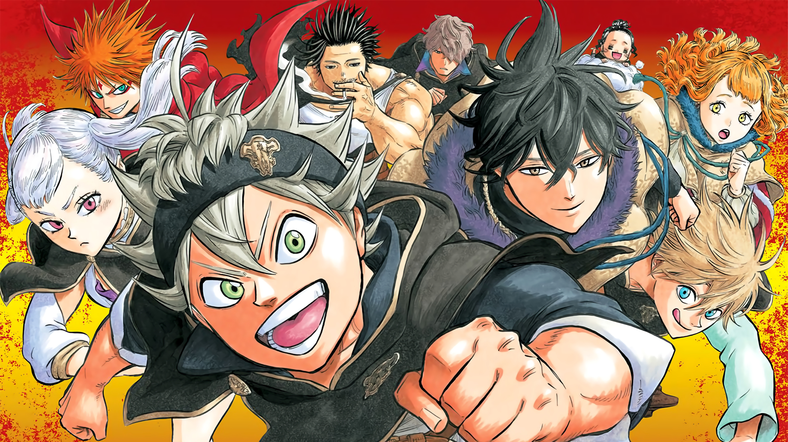
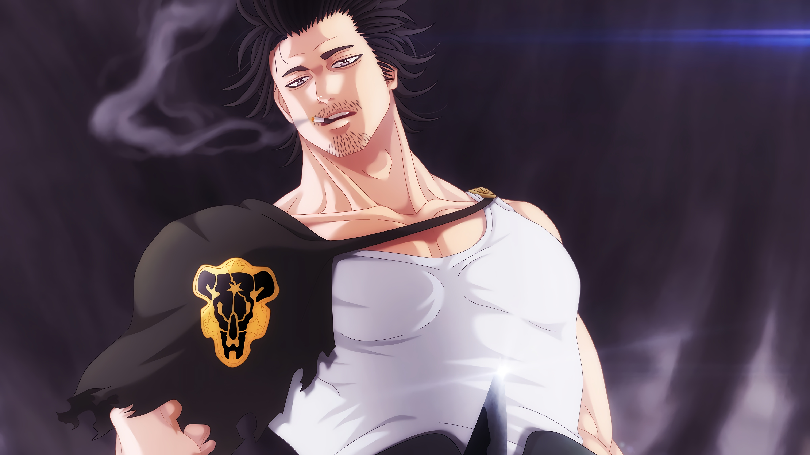
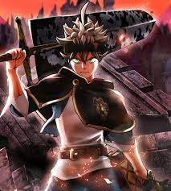
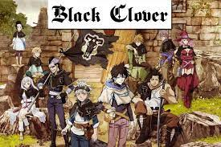

1

Asta est un jeune garçon déterminé qui vit avec son ami d’enfance, Yuno, dans un orphelinat du royaume de Clover. Depuis tout petit, Asta a pour ambition de devenir le magicien le plus puissant du royaume, "l’Empereur-Mage", ce qui a aussi inspiré Yuno à vouloir la même chose. Mais malheureusement, Asta est né sans aucun talent magique, alors que Yuno possède des prédispositions spectaculaires.
Lorsqu'ils atteignent leurs 15 ans, tous les jeunes du royaume sont conviés à une cérémonie où leur est remis leur grimoire : alors que Yuno reçoit le légendaire grimoire avec un trèfle à quatre feuilles, considéré comme un mythe puisque la légende prétend que le premier Empereur-Mage utilisait également un grimoire portant un trèfle à quatre feuilles, Asta ne reçoit rien. Après la cérémonie, Yuno est attaqué par un brigand qui souhaite lui voler son grimoire pour ensuite tenter de le revendre.
Asta part pour le sauver mais se retrouve en difficulté, heureusement il est sauvé par un mystérieux grimoire avec un trèfle à cinq feuilles et une grande épée rouillée, qui symbolise le démon.
Asta et Yuno se font la promesse de se battre tous les deux pour le titre d’Empereur-Mage. Alors que leurs chemins se séparent sur la route des Chevaliers-Mages, leur objectif est toujours le même : devenir le prochain Empereur-Mage.
La série se concentre sur Asta, un jeune orphelin qui est parti pour être élevé dans un orphelinat aux côtés de son compagnon orphelin, Yuno. Alors que tout le monde est né avec la capacité d'utiliser le mana sous forme de pouvoir magique (魔力, Maryoku ), Asta sans magie, cependant, se concentre plutôt sur la force physique. Inversement, Yuno est né comme un prodige doté d'un immense pouvoir magique et du talent pour contrôler la magie du vent. Motivés par le désir de devenir le prochain roi sorcier, une figure d'autorité après le roi du royaume du trèfle, les deux jeunes ont développé une rivalité amicale. Yuno obtient un grimoire légendaire à quatre feuilles détenu par le premier roi sorcier du royaume. Le grimoire à quatre feuilles est un grimoire rare, réservé aux mages les plus immenses. Asta, malgré son manque de magie, a obtenu un mystérieux grimoire à cinq feuilles qui contient de mystérieuses épées d'elfes et un membre sans corps de la race du diable qui utilise une anti-magie rare. Par la suite, lui et Yuno rejoignent chacun une équipe de Magic Knight comme première étape pour réaliser leurs ambitions.
Asta rejoint les Black Bulls aux côtés de Noelle Silva tandis que Yuno devient membre de la Golden Dawn, se lançant dans diverses aventures tout en affrontant un groupe extrémiste appelé l' Eyeil du soleil de minuit dont le leadership est manipulé par un diable pour venger une injustice commise contre les Elfes. par le Royaume du Trèfle au moment de sa fondation. Les Chevaliers Magiques affrontent ensuite la Triade Sombre du Royaume de Spade, avec Asta et Yuno apprenant l'influence de leurs Diables sur leur vie et le plan de la Triade Sombre pour manifester pleinement les Diables dans leur monde.
Quelques Images de Notre manga adoré
  